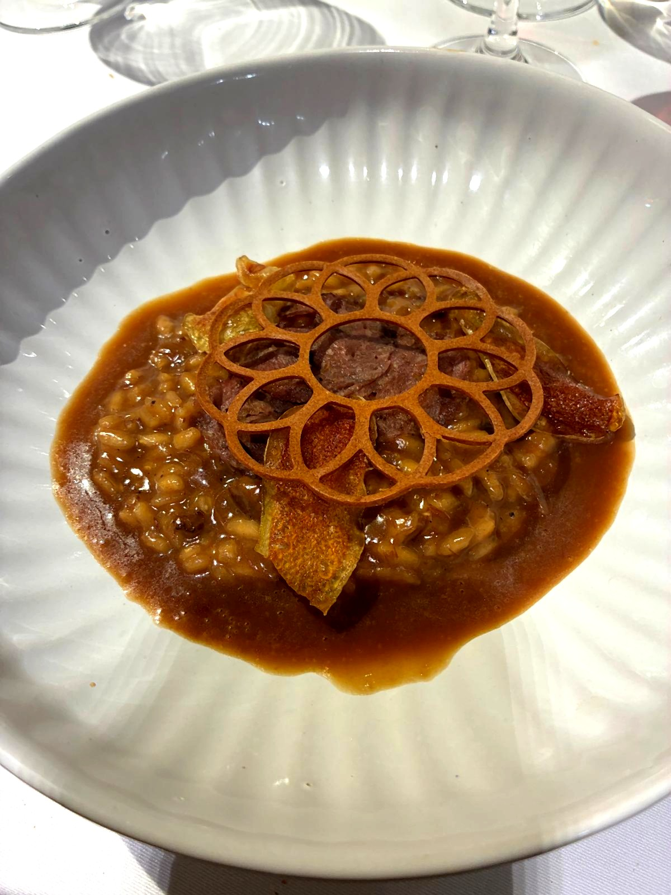
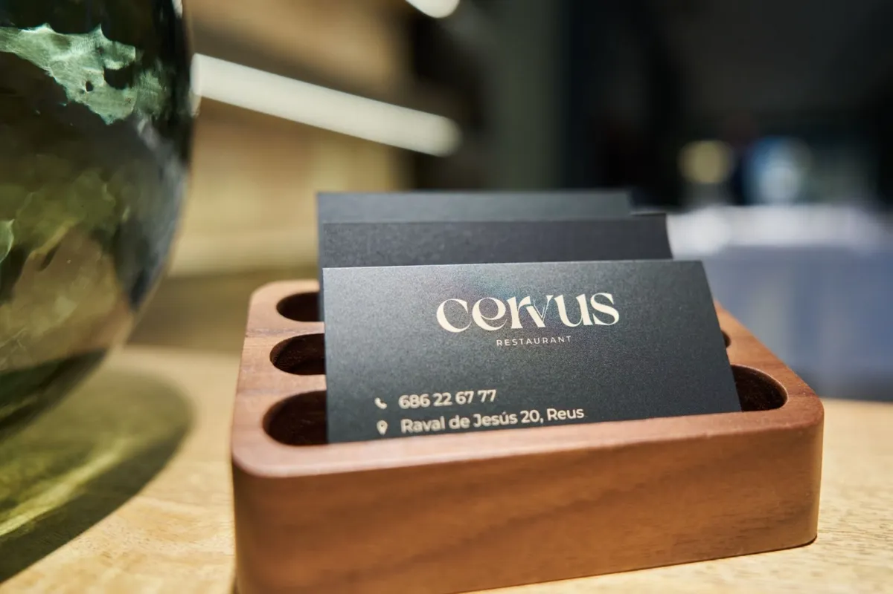
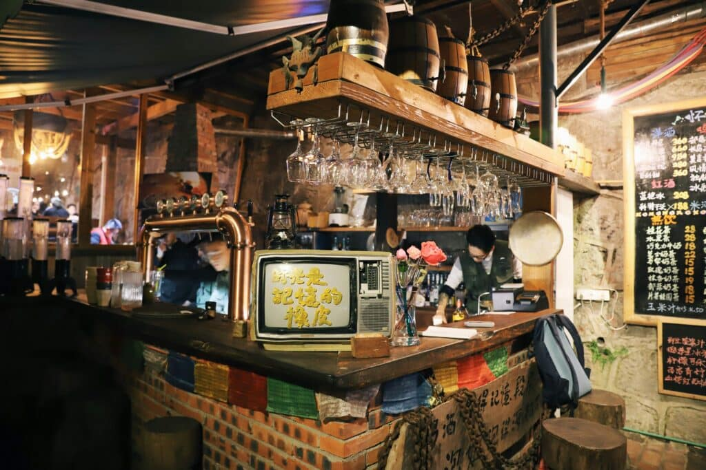
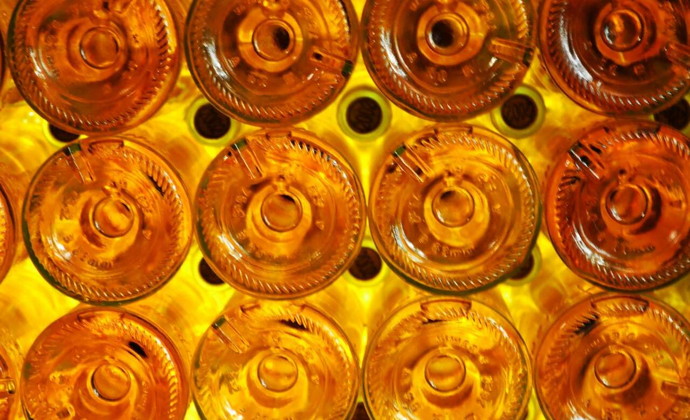
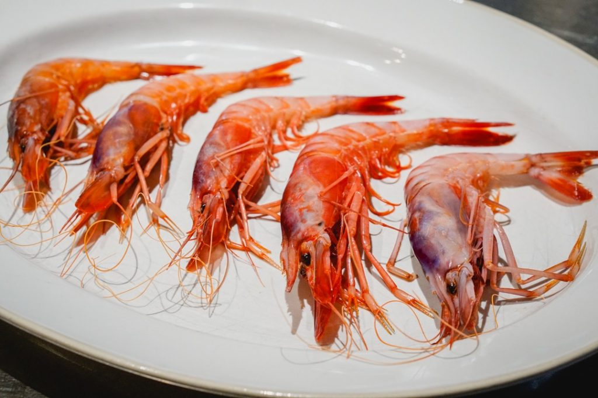
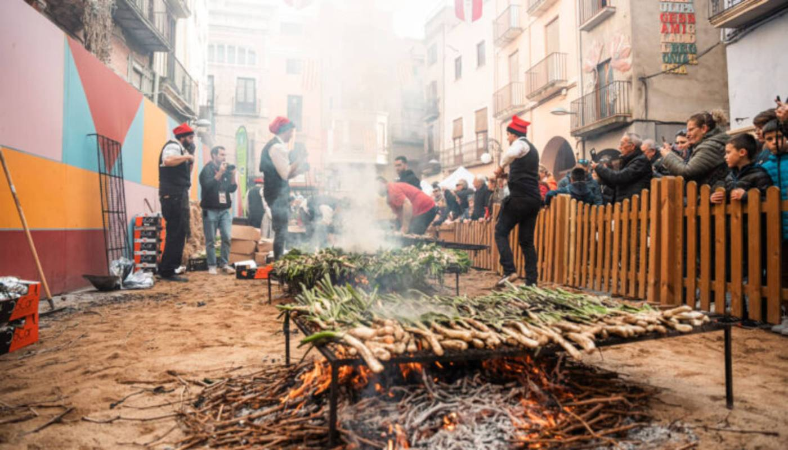
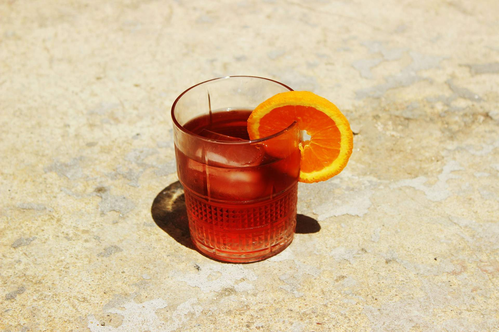
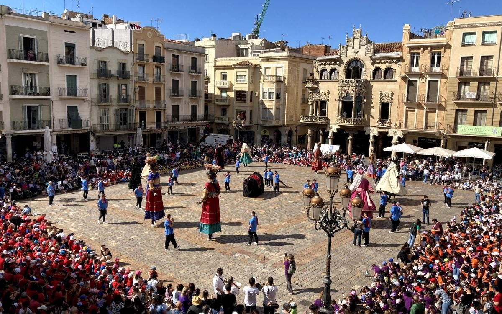
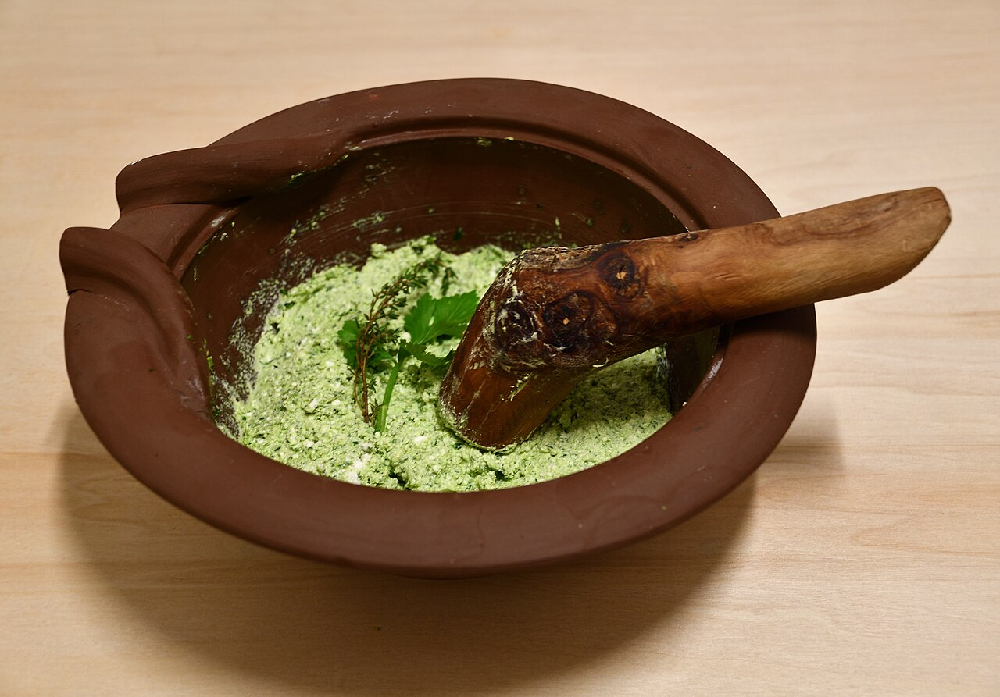

Crónica
Cervus · Reus
Crónica de la 4ª visita
Vermut de Reus, galera con amontillado y un arroz meloso que lo dijo todo.
Leer →Blog Gourmet
Previas, crónicas, noticias y vinos del Camp de Tarragona. Todo lo que rodea a la mesa de los Gourmets.

Crónica · 4ª Visita 2026Un rebujito de vermut y oloroso, galera con amontillado y un arroz meloso que lo dijo todo. Nil Bono y Lucía Fernández demostraron por qué Reus tiene lo que tiene.
Leer la crónica completa →Recorrido Gourmet

CrónicaVermut de Reus, galera con amontillado y un arroz meloso que lo dijo todo.
Leer → Previa
Previa
Dos cocineros, una decisión de vida y un Sol Repsol en catorce meses.
Leer → Crónica
Crónica
Agua de rosas, briwat en dos pasos, romesco de gamba y tajine de cordero.
Leer → Previa
Previa
Moha Quach, Sol Repsol, Guía Michelin y Premio Revelación Nacional 2025.
Leer → Crónica
Previa
Crónica
Previa
Todo lo que había que saber antes de la 2ª visita del Recorrido Gourmet 2026.
Leer → Crónica
Crónica
 Previa
Previa
Actualidad
 Tendencias
Tendencias
La gastronomía de 2026 respira diferente. Menos ruido, más territorio.
Leer → Noticia
Noticia
Un referente de la Costa Daurada que ha sabido mantenerse fiel a sus principios.
Leer → Evento
Evento
Buidasacs y Cambium, Trofeos Gastronia. Cirerets de Mas Alta, Premio Bacus.
Leer →
CulturaDe Babette a Ratatouille, de Tampopo a The Bear. Diez películas donde la comida no es el tema: es el lenguaje.
Leer → Cultura
Cultura
Nuestra selección de lecturas gastronómicas para este 23 de abril.
Leer →Enología
 Vins
Vins
La botrytis, los puttonyos y kilómetros de bodegas subterráneas. La historia del vino más legendario de Europa, que Vega Sicilia decidió hacer suyo en Hungría.
Leer →
VinosUna elaboración milenaria que el mundo acaba de descubrir.
Leer → Vinos
Vinos
La burbuja más antigua del mundo ha vuelto.
Leer → Vinos
Vinos
Cruzó los Pirineos a pie y acabó sirviendo la última cena a Marilyn Monroe.
Leer →Cinco personas que transformaron una comarca olvidada en una denominación de referencia mundial.
Leer → Vinos
Vinos
Ocho denominaciones, ocho territorios con voz propia.
Leer →Patrimonio gastronómico

CuriositatsLa misma especie que en Palamós o Dénia, pescada a 400 brazas en el Serrallo. Aquí la tienen desde siempre. Solo les faltaba contarlo bien.
Leer →
CuriositatsEl Xat de Benaiges, la salvitxada y 100 millones de calçots al año. La historia de una cebolla quemada que se convirtió en ritual gastronómico mundial.
Leer →
CuriosidadesDel aguardiente al aperitivo más elegante de Europa.
Leer →
CuriosidadesUn gesto generoso del siglo XIX que se convirtió en tradición.
Leer → Curiosidades
Curiosidades
Del Llibre de Sent Soví del siglo XIV a las confiterías de Reus.
Leer → Curiosidades
Curiosidades

CuriosidadesYa se comía en Tarraco antes de que existiera el pesto.
Leer → Curiosidades
Curiosidades
Tarraco lo fabricaba y exportaba al mundo. Su herencia vive en las anchoas de tu nevera.
Leer →
Curiosidades
Todo lo que hay que saber sobre el máximo reconocimiento de los Gourmets.
Leer →